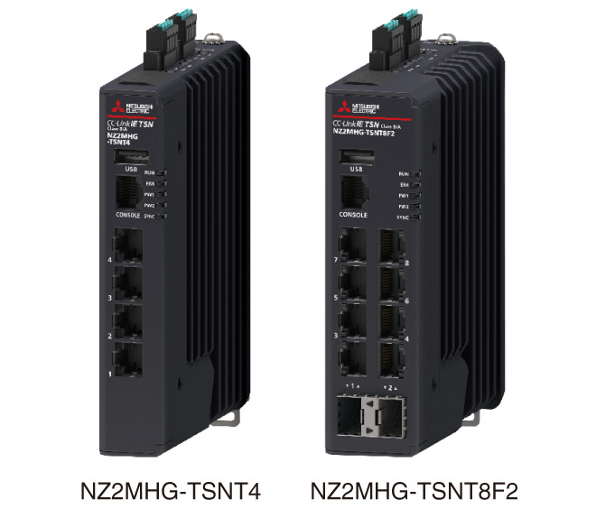
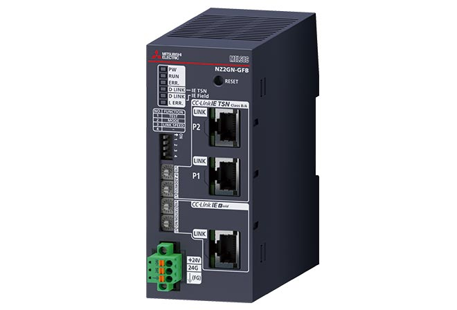
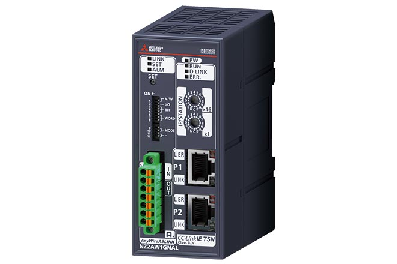

Network-related products |
Programmable Controllers MELSEC
Produk CC-Link IE TSN

Modul jembatan/sakelar Ethernet terkelola
Sakelar Ethernet terkelola
- Topologi bintang dapat dikonfigurasi dengan sakelar Ethernet yang dikelola. NZ2MHG-TSNT4 dilengkapi dengan 4 port Ethernet dan NZ2MHG-TSNT8F2 dilengkapi dengan 8 port Ethernet
- Perangkat komunikasi TCP/IP dapat dihubungkan ke port Ethernet yang kosong, sehingga memungkinkan sistem canggih yang sangat fleksibel
- Gangguan pada sistem kontrol dapat diminimalkan saat terjadi kesalahan seperti kegagalan perangkat jarak jauh dan pemutusan kabel
- Jarak kabel antar perangkat dapat diperpendek, sehingga mengurangi biaya kabel. Selain itu, modifikasi tata letak dan penambahan/penggantian perangkat jarak jauh dapat diselesaikan secara efisien

Produk ini dikembangkan dan diproduksi oleh Moxa Inc.
Harap diperhatikan bahwa spesifikasi dan ketentuan garansi produk berbeda dari produk Seri MELSEC.
Modul jembatan
Modul jembatan CC-Link IE TSN - CC-Link IE Field Network
- Mengintegrasikan CC-Link IE Field Network ke CC-Link IE TSN dengan lancar
- Dapat digunakan sebagai stasiun jarak jauh di CC-Link IE TSN dan sebagai stasiun induk atau lokal di CC-Link IE Field Network
- Memungkinkan perangkat CC-Link IE TSN untuk ditambahkan ke CC-Link IE Field Network *1
- Memungkinkan perangkat CC-Link IE Field untuk ditambahkan ke CC-Link IE TSN
- *1.Karena NZ2GN-GFB tidak berfungsi sebagai stasiun induk CC-Link IE TSN, diperlukan stasiun induk terpisah pada jaringan CC-Link IE TSN.

Modul jembatan CC-Link IE TSN-AnyWireASLINK*2
- Mengintegrasikan produk AnyWireASLINK dengan lancar ke CC-Link IE TSN
- AnyWireASLINK adalah jaringan kabel yang diperkecil yang mewujudkan pemantauan sensor dan ruang instalasi yang diperkecil
- Mendukung iQSS (iQ Sensor Solution), yang memungkinkan pengaturan parameter dan pemantauan produk AnyWireASLINK
- *2.Untuk rincian lebih lanjut, silakan merujuk ke “katalog DIGITAL LINK SENSOR AnyWireASLINK (L(NA)08221E)”.
